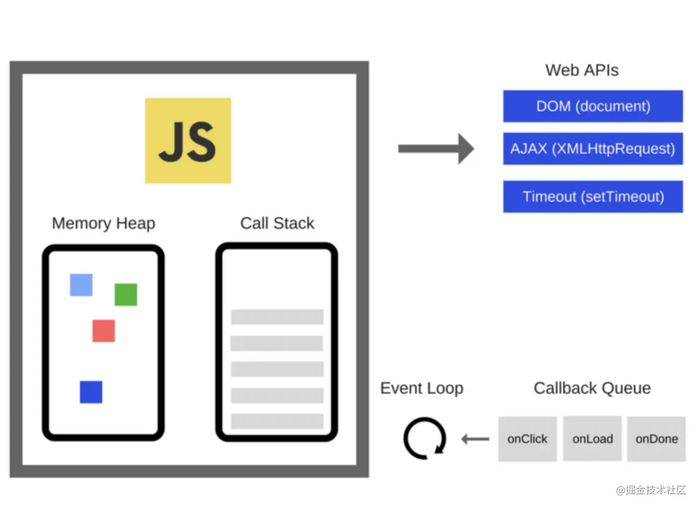

setTimeout 为什么不能保证能够及时执行？
参考答案

主线程从任务队列中读取事件，这个过程是循环不断的，所以整个的这种运行机制又称为Event Loop。
setTimeout 并不能保证执行的时间，是否及时执行取决于 JavaScript 线程是拥挤还是空闲。
浏览器的JS引擎遇到setTimeout，拿走之后不会立即放入异步队列，同步任务执行之后，timer模块会到设置时间之后放到异步队列中。js引擎发现同步队列中没有要执行的东西了，即运行栈空了就从异步队列中读取，然后放到运行栈中执行。所以setTimeout可能会多了等待线程的时间。
这时setTimeout函数体就变成了运行栈中的执行任务，运行栈空了，再监听异步队列中有没有要执行的任务，如果有就继续执行，如此循环，就叫Event Loop。